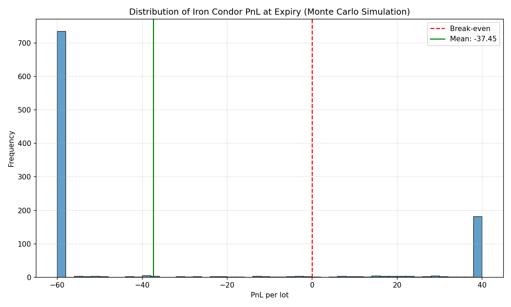

Clean, analysis-ready NIFTY options data for quantitative research and algo trading.
Raw NSE data lacks IV, Greeks, and realistic execution costs. Building this pipeline yourself requires:
This repository gives you a reference implementation, while production-grade data and API access are available on request.
# Clone the repository
git clone https://github.com/darshkale/nse-options-data-pipeline.git
cd nse-options-data-pipeline
# Install dependencies
pip install -r requirements.txt
# Run the strategy demo (see results in under 1 minute)
python examples/run_strategy.py
# Explore the demo notebook
jupyter notebook notebooks/demo_iron_condor.ipynb
Unlock the complete 5+ year dataset, API access, and premium features:
📩 Email: yogesh@afi.edu.in
Subject: "NIFTY Options Data Access"

Figure: Sample PnL distribution from an iron condor strategy backtest.